. A curva é uma previsão quantitativa; as trajetórias da figura 1 são uma imagem qualitativa.OPENCODE ECOSYSTEM CORE · EDIÇÃO BLACK
Onda piloto, diálogo e totalidade no ensino de informação quântica
Livro didático e laboratório · PennyLane · Cirq · Qiskit
9º ano do Ensino Fundamental e Ensino Médio
Coleção Educação Básica · Edição Black
Onda piloto, diálogo e totalidade no ensino de informação quântica
Livro do estudante, laboratório de práticas e manual do professor.
Uma aula sobre o que pode estar acontecendo — e sobre como pensar juntos.
Orquestração editorial: marceloclaro
OpenCode Ecosystem Core
1.ª edição · 2026
Material didático para uso em sala de aula.
Bohm é apresentado como uma lente entre várias — não como consenso científico.
Esta edição foi desenhada em preto, para tela, projetor e leitura noturna. Ela não substitui a edição clara: para impressão em grande quantidade, o fundo escuro consome tinta. Use esta versão quando a tela for o meio principal.
🌊 Lente de Bohm. Uma ideia de David Bohm — onda piloto, diálogo, ordem implicada — apresentada com o cuidado de distinguir interpretação, analogia e fato experimental.
🧪 Prática de laboratório. Código executável em PennyLane, Cirq ou Qiskit. Toda prática tem objetivo, código, resultado esperado e um checkpoint.
⚠️ Limite. O ponto em que a analogia, o modelo ou a interpretação deixa de funcionar. Não é um detalhe: é parte do conceito.
🗣️ Roda de diálogo. Um gesto bohminiano: suspender suposições, escutar, desacelerar e investigar o pensamento em conjunto.
✍️ Diário de bordo. Três perguntas: o que eu vi, o que eu suponho, o que eu quero testar. O diário é o elo entre a prática e o pensamento.
A promessa é simples: você vai ver a mecânica quântica funcionando em três bibliotecas diferentes, vai desenhar o mesmo estado de Bell em PennyLane, Cirq e Qiskit, e vai discutir o que essas representações não mostram.
O limite é igualmente simples: nenhuma dessas bibliotecas prova que a onda piloto é a descrição correta do mundo. Elas calculam previsões. A interpretação de Bohm é uma das leituras possíveis dessas previsões — não a única, nem a majoritária.
Regra de ouro desta edição: sempre que alguém disser “a física quântica é assim”, pergunte: isso é um resultado experimental, uma interpretação ou uma analogia? As três coisas têm valor, mas não são a mesma coisa.
AULA_BOHM_LABORATORIO.ipynb no Google Colab
ou Jupyter.No início do notebook, execute uma vez:
!pip install -q pennylane qiskit cirq pylatexencAs três bibliotecas são gratuitas e de código aberto. O notebook foi testado com PennyLane 0.45, Cirq 1.7 e Qiskit 2.6. Versões diferentes podem mudar pequenos detalhes de desenho, mas os conceitos permanecem.
Você já ouviu que a mecânica quântica é estranha. Provavelmente ouviu também que ninguém entende. As duas frases são meio verdadeiras e meio preguiçosas.
David Bohm foi um físico que levou a estranheza a sério. Em vez de dizer “não pergunte o que acontece antes da medição”, ele propôs uma imagem: uma onda que guia partículas que sempre têm uma posição. Essa imagem não é a única, mas é poderosa — e nos obriga a dizer, com clareza, o que estamos supondo.
Este livro usa Bohm de três modos:
Você não precisa concordar com Bohm. Precisa saber o que ele propôs, por que isso faz as mesmas previsões e qual é o preço da proposta. Isso é educação científica: não é colecionar nomes, é aprender a avaliar modelos.
✍️ Antes de começar. Escreva em uma frase: o que eu acho que acontece entre duas medições? Guarde. No final, releia e veja se a pergunta mudou.
Esta edição nasceu de um pedido: ensinar Bohm na educação básica, com rigor e com prática o tempo todo, usando ilustrações geradas por PennyLane, Cirq e Qiskit.
| Tempo | Bloco | O que fazer |
|---|---|---|
| 0–10 | Abertura | pergunta: “o que acontece entre duas medições?” |
| 10–25 | Lente de Bohm | cap. 1–2 + figura da onda piloto |
| 25–45 | Diálogo | cap. 3 + roda de 15 min |
| 45–70 | Laboratório | cap. 6–7 + PennyLane/Cirq/Qiskit |
| 70–85 | Totalidade | cap. 4–5 + holograma/emaranhamento |
| 85–100 | Síntese | projeto + diário + checkpoint |
O fundo preto é ótimo para projetor e tela, mas não é econômico para impressão. Se a escola for imprimir para 40 estudantes, use a edição clara ou imprima apenas as páginas de prática. Esta edição foi feita para ser lida com luz baixa e para destacar as figuras geradas por código.
Bohm não é consenso. A interpretação de onda piloto faz as mesmas previsões da mecânica quântica não relativística, mas paga um preço: não localidade e uma descrição em espaço de configuração. Apresente-a como uma lente, não como a verdade revelada. O valor pedagógico está em comparar modelos — não em recrutar adeptos.
Abertura
Parte I — A lente de Bohm
Parte II — Totalidade
Parte III — Laboratório
Parte IV — Limites e projeto
Apêndices
“A fragmentação do pensamento é o problema; a totalidade é a investigação.”
David Bohm (1917–1992) foi um físico teórico que trabalhou com plasmas, teoria quântica e filosofia da ciência. Ele ficou conhecido por duas contribuições muito diferentes:
Nenhuma das duas é consenso. E é justamente por isso que Bohm é útil na escola: ele nos obriga a perguntar o que estamos supondo quando dizemos que uma partícula “não tem trajetória”, que a medição “colapsa” o estado ou que o mundo é feito de partes separadas.
Bohm observou que o pensamento humano tende a dividir o mundo em pedaços: ciências e humanidades, teoria e prática, mente e corpo, nós e eles. A divisão é útil para organizar o estudo, mas pode se tornar uma armadilha quando esquecemos que foi nós que a fizemos.
Na física quântica, a fragmentação aparece em várias formas:
Bohm não oferece uma resposta definitiva para todas elas. Oferece uma disciplina de perguntar e uma imagem para testar.
A interpretação de Bohm diz: partículas têm posições definidas o tempo todo. Uma onda (a função de onda) as guia. Isso não é uma afirmação experimental; é uma escolha sobre o que existe. O ganho é uma imagem clara do que pode estar acontecendo. O preço é a não localidade.
Bohm propôs que pensemos juntos de um modo diferente do debate. Em vez de defender posições, suspendemos as suposições e investigamos o que está por trás delas. Isso não é uma técnica de “conversa mole”: é uma prática exigente de escuta e de observação do próprio pensamento.
A ideia de ordem implicada sugere que o todo pode estar presente em cada parte, como em um holograma. É uma metáfora poderosa para o emaranhamento e para a interdisciplinaridade — mas não é uma teoria física comprovada. Voltaremos a isso no capítulo 4.
⚠️ Limite da lente. A teoria de Bohm é não relativística na sua forma padrão. Extensões relativísticas existem, mas são tecnicamente difíceis e não são consenso. Não diga “Bohm explica tudo”; diga “Bohm oferece uma imagem com um preço”.
🧪 Prática 1 — Mapa da fragmentação (10 min, sem código).
Em grupos de quatro, listem cinco divisões que vocês usam no estudo (por exemplo: “exatas × humanas”, “teoria × prática”, “eu × grupo”). Para cada divisão, respondam:
Depois, escolham uma divisão e escrevam uma frase que comece com “E se…”. Guardem no diário. Na roda de diálogo do capítulo 3, essa frase será o ponto de partida.
Checkpoint: você consegue nomear uma divisão e o que ela exclui? Então a prática funcionou.
“A partícula sempre está em algum lugar; a onda diz para onde ela vai.”
A mecânica quântica padrão costuma ser ensinada assim: o estado é uma função de onda; a medição produz um resultado probabilístico; antes da medição, não faz sentido falar em trajetória. Essa é uma leitura possível — e muito útil para calcular.
Bohm propôs outra leitura. Ele manteve a função de onda, mas acrescentou algo: partículas com posições definidas, guiadas pela onda. A função de onda não é apenas um cálculo de probabilidades; ela é um campo que pilota o movimento.
Para uma partícula de massa , a velocidade é dada por
avaliada na posição da partícula. Em palavras: a fase da função de onda funciona como um campo de velocidades. Onde a fase muda rapidamente, a partícula se move mais depressa; onde a fase é plana, ela quase para.
A função de onda evolui pela equação de Schrödinger, como sempre. O que muda é que a partícula tem uma trajetória — e a trajetória é guiada pelo todo da função de onda, não apenas por uma região local.
🌊 Lente de Bohm. Imagine uma folha flutuando em um rio. A folha tem uma posição definida; o rio a carrega. A função de onda é o rio; a partícula é a folha. A analogia é imperfeita: o “rio” é um campo matemático, e para várias partículas ele vive em um espaço de configuração de muitas dimensões. Mas a intuição ajuda: a partícula não é a onda, e a onda não é a partícula.
No experimento de dupla fenda, a história padrão diz que não podemos dizer por qual fenda a partícula passou sem destruir o padrão de interferência. A história bohmiana diz algo diferente:
Isso é mostrado na figura 1. As trajetórias se curvam e se agrupam nas regiões claras do padrão. O padrão de intensidade está à direita.
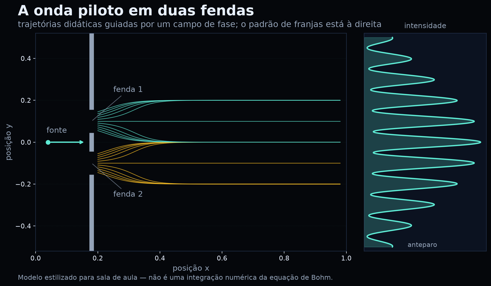
O padrão de interferência em si é calculado pela fórmula usual:
⚠️ Limite da figura 1. O campo de velocidades usado na figura é estilizado. Ele foi desenhado para mostrar o agrupamento nas franjas, não para resolver a equação de Bohm com um potencial real. A figura 2, sim, é uma curva física padrão. Não misture as duas: uma é imagem, a outra é cálculo.
Na leitura de Bohm, não há “colapso” como um processo físico fundamental. O que acontece é mais parecido com isto:
Isso é chamado às vezes de colapso efetivo. A palavra “efetivo” é importante: não é um postulado adicional; é uma consequência da dinâmica, desde que a distribuição inicial das posições seja .
Se as posições iniciais forem distribuídas segundo , a dinâmica de Bohm preserva essa distribuição para sempre. Essa propriedade se chama equivariância. É por isso que a teoria reproduz as probabilidades quânticas: a regra de Born não é um postulado independente; ela é uma distribuição de equilíbrio — a “hipótese de equilíbrio quântico”.
Isso não é uma demonstração de que a natureza siga Bohm. É uma explicação de por que, se ela seguir, os números batem.
Para uma partícula, a onda vive no espaço tridimensional. Para duas partículas emaranhadas, a função de onda vive em um espaço de seis dimensões (3 por partícula); para partículas, . A velocidade de uma partícula depende da posição de todas as outras, através da função de onda.
É assim que Bohm reproduz as correlações de Bell: a influência é não local. Mas não há envio de mensagem mais rápido que a luz, porque a distribuição de equilíbrio impede que essa influência seja controlada para codificar um sinal.
⚠️ O que Bohm não resolve. A não localidade explícita torna a extensão relativística difícil. A teoria padrão também tem correlações não locais, mas não precisa de um “guia” que conecte posições instantaneamente. Não apresente Bohm como uma solução fácil para a relatividade.
🧪 Prática 2 — Ver a onda guiar (15 min, notebook).
No notebook, execute a célula da prática 4. Ela desenha trajetórias em um campo de fase estilizado. Depois:
Checkpoint: você consegue dizer o que é modelo e o que é medida? Se sim, avançou.
“O objetivo não é concordar; é ver o que estamos pensando.”
Bohm não foi apenas um físico de interpretações. Ele também propôs uma prática coletiva: o diálogo. Não é debate, não é terapia, não é assembleia. É uma investigação em grupo sobre as próprias suposições.
| Debate | Diálogo |
|---|---|
| defende posições | examina suposições |
| busca vencer | busca compreender |
| interrompe | escuta |
| pressupõe que um está certo | pressupõe que todos podem aprender |
| termina com vencedor | termina com mais consciência |
O diálogo bohminiano não exige consenso. Exige presença e honestidade.
A figura 3 resume oito gestos que sustentam uma roda de diálogo.

Material: uma pergunta, um objeto para passar (talking piece), um caderno.
Regras de segurança: ninguém é obrigado a falar; não se corrige a fala do outro; não se transforma a roda em julgamento pessoal; o professor facilita, não doutrina.
🗣️ Perguntas que funcionam. “O que é medir?”; “O que muda quando alguém observa?”; “O que queremos dizer com ‘real’?”; “Quando uma analogia ajuda e quando ela engana?”. Evite perguntas com resposta única ou com tom de prova.
Depois da roda, cada estudante registra:
| Campo | Exemplo |
|---|---|
| Pergunta | O que é medir? |
| Suposição que eu trouxe | “Medir é descobrir um valor que já estava lá.” |
| O que mudou | “Percebi que eu confundia medir com ler.” |
| O que quero testar | “Ver se a ordem das portas muda o resultado.” |
O diário não é confissão. É registro de pensamento.
🧪 Prática 3 — Roda de diálogo (15 min, sem código).
Pergunta: “O que acontece entre duas medições?”
Dividam-se em facilitador, observador e participantes. O observador não participa da fala; anota:
No fim, o observador lê as notas sem julgar. A turma decide se a pergunta mudou.
Checkpoint: a pergunta inicial ainda é a mesma? Se mudou, o diálogo fez seu trabalho.
“O explícito é o desdobramento do implícito.” — David Bohm (paráfrase)
Bohm propôs uma distinção filosófica entre duas ordens:
A imagem que ele usou é a do holograma: cada parte de um holograma contém informação sobre o todo. Se você corta um holograma em pedaços, cada pedaço ainda reconstrói uma versão borrada da imagem inteira — não porque cada pedaço seja mágico, mas porque a informação está distribuída de forma não local.
A figura 4 mostra uma versão computacional dessa ideia. A imagem original é a letra “B”. O espectro de Fourier contém a informação distribuída. Quando mantemos apenas 1,1% dos coeficientes, ainda reconstruímos uma versão borrada do “B”.
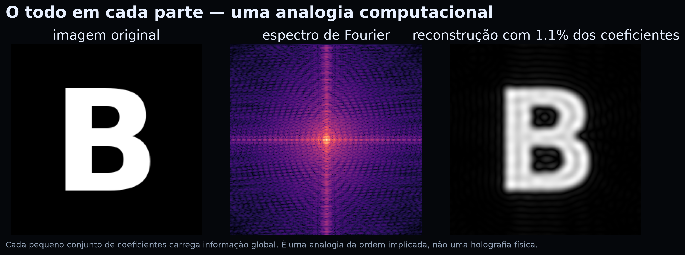
O ponto pedagógico é: a informação pode estar no todo, não apenas nas partes. Isso ajuda a imaginar por que o emaranhamento não é uma soma de duas histórias independentes. Mas há um limite importante.
⚠️ Limite da analogia. Um holograma é um padrão de interferência clássico. A ordem implicada é uma proposta filosófica de Bohm, não uma teoria física comprovada. Não diga “o universo é um holograma” como se fosse fato. Diga: “essa imagem nos ajuda a pensar sobre totalidade; ela não substitui a matemática”.
A ideia de totalidade tem uma consequência pedagógica: um conceito não é uma ilha. “Medição” envolve aparelho, teoria, probabilidade e interpretação. “Qubit” envolve álgebra, física e tecnologia. Ensinar por fragmentos pode até funcionar na prova, mas não forma compreensão.
🗣️ Pergunta para a roda. “O que muda no meu jeito de estudar se eu acreditar que as partes carregam o todo?” Não há resposta certa. O objetivo é observar como a suposição altera a prática.
🧪 Prática 4 — O todo em 1% (10 min, notebook).
Execute a célula do holograma. Depois:
Checkpoint: você consegue explicar por que a imagem borrada ainda é reconhecível? Se sim, entendeu a ideia de informação distribuída.
“Duas partes, um estado. Correlação não é mensagem.”
O emaranhamento é o fenômeno que mais desafia a imagem de um mundo feito de partes independentes. Dois qubits podem ser descritos por um único estado:
Se Alice mede o primeiro qubit e obtém 0, o segundo qubit de Bob está em 0. Se ela obtém 1, o de Bob está em 1. A correlação é perfeita — mas cada resultado isolado é 50%/50%.

Na leitura padrão, o estado de Bell é não separável: não podemos escrevê-lo como “estado de Alice × estado de Bob”. Não é que não saibamos os estados individuais; é que o todo não se decompõe em partes independentes.
Na leitura de Bohm, o guia (a função de onda) vive em um espaço de configuração de dimensão maior. A velocidade de uma partícula depende da posição da outra. A não separabilidade é explícita: o todo guia as partes.
Bell mostrou que nenhuma teoria de variáveis ocultas locais consegue reproduzir todas as correlações quânticas. Isso não refuta Bohm, porque a teoria de Bohm é não local. O preço da imagem clara é a não localidade.
| Modelo | Variáveis ocultas? | Local? | Reproduz Bell? |
|---|---|---|---|
| Quântica padrão | não (ou contextual) | não | sim |
| Bohm | sim (posições) | não | sim |
| Variáveis ocultas locais | sim | sim | não |
Alice não escolhe o resultado que vai obter. Bob, sozinho, vê 50/50. A correlação só aparece quando eles comparam os registros — e a comparação exige um canal clássico, que respeita o limite da velocidade da luz.
Na teoria de Bohm, a influência não local existe, mas não é controlável. A distribuição de equilíbrio garante que nenhum sinal possa ser codificado nela. Não localidade não é o mesmo que comunicação.
⚠️ Cuidado com a palavra “instantâneo”. A onda piloto descreve uma dependência instantânea no espaço de configuração, mas isso não significa que um experimentador possa enviar um bit instantaneamente. A teoria é não local; a signaling é proibida.
🧪 Prática 5 — Correlação e anti-correlação (15 min, notebook).
No notebook, execute a prática 3 com Qiskit. Depois, troque o estado de Bell
por
e repita a amostragem.Checkpoint: você consegue explicar a diferença entre “resultados iguais” e “resultados opostos” sem dizer que um sinal foi enviado? Se sim, avançou.
Bohm acrescenta uma imagem: partículas com trajetórias, guiadas por uma onda não local. Isso pode ajudar a pensar sobre o que acontece entre medições.
Bohm não acrescenta uma nova previsão experimental para os fenômenos desta aula. As probabilidades, as correlações e a violação de Bell são as mesmas. A diferença é interpretativa — e interpretações não são descartáveis, mas também não são fatos experimentais.
Pergunta para levar adiante: se duas interpretações fazem as mesmas previsões, o que mais conta na escolha? Simplicidade? Intuição? Ontologia? Ensino? Essa é uma pergunta filosófica legítima — e uma ótima roda de diálogo.
“O mapa não é o território — mas três mapas bons ajudam a ver o território.”
PennyLane, Cirq e Qiskit são bibliotecas de código aberto para computação quântica. Elas têm filosofias diferentes, mas descrevem o mesmo estado de Bell com as mesmas portas. Comparar as três é uma excelente prática meticulosa: você percebe o que é conceito e o que é convenção da ferramenta.

| Aspecto | PennyLane | Cirq | Qiskit |
|---|---|---|---|
| Unidade | wires (fios) | LineQubit |
QuantumCircuit |
| Porta H | qml.Hadamard(0) |
cirq.H(q0) |
qc.h(0) |
| CNOT | qml.CNOT([0,1]) |
cirq.CNOT(q0,q1) |
qc.cx(0,1) |
| Medição | qml.probs / qml.sample |
cirq.measure |
Statevector / sample_counts |
| Desenho | qml.draw_mpl |
diagrama textual | qc.draw("mpl") |
| Ordem dos qubits | declarada nos wires | linha | convenção little-endian |
A diferença de ordem é a fonte mais comum de erro. Em Qiskit, o
bitstring 10 pode significar “qubit 1 = 1, qubit 0 = 0”; em
Cirq, a ordem é a dos qubits na linha. Sempre confira a
convenção antes de comparar resultados.
A figura 7 mostra as probabilidades calculadas por PennyLane (exatas) e as frequências observadas em Cirq e Qiskit (2000 tiros cada). As barras de |00⟩ e |11⟩ ficam em torno de 50%; |01⟩ e |10⟩ ficam em zero.

🧪 Prática 6 — Três linguagens, uma tabela (20 min).
No notebook, execute as três práticas (PennyLane, Cirq e Qiskit). Preencha:
| Grandeza | PennyLane | Cirq | Qiskit |
|---|---|---|---|
| P(00) | |||
| P(11) | |||
| P(01) | |||
| P(10) |
Depois, responda: as diferenças são conceituais ou estatísticas? Como você pode distinguir?
Checkpoint: você consegue explicar por que as três bibliotecas concordam?
“Um circuito é uma função; a medição é o retorno.”
PennyLane foi desenhada para diferenciação
automática de circuitos quânticos. Para esta aula, usaremos
apenas o básico: um dispositivo default.qubit, um QNode e
medições de probabilidade.
import pennylane as qml
dev = qml.device("default.qubit", wires=2)
@qml.qnode(dev)
def bell():
qml.Hadamard(wires=0)
qml.CNOT(wires=[0, 1])
return qml.probs(wires=[0, 1])
print(bell()) # [0.5 0. 0. 0.5]
qml.draw_mpl(bell)() # desenha o circuito
qml.Hadamard(0) cria
no fio 0.qml.CNOT([0,1]) inverte o fio 1 quando o fio 0 é
1.qml.probs(wires=[0,1]) devolve um vetor de quatro
posições.
para os wires declarados.[0.5, 0, 0, 0.5].qml.CNOT por qml.Z(1) e observe o
que muda.qml.Hadamard(0) por qml.Hadamard(1)
e compare.qml.draw_mpl(bell) para ver o desenho.⚠️ Limite. PennyLane calcula probabilidades
exatas no simulador. Isso não é o mesmo que medir 2000
vezes. Para comparar com Cirq/Qiskit, use qml.sample ou
amostre a distribuição.
🧪 Checkpoint da prática 1.
Se faltou algum, releia a seção 6.1 e refaça.
“A linha é o palco; as portas são os gestos.”
Cirq organiza o circuito em linhas de qubits. É uma biblioteca muito usada em pesquisa com hardware supercondutor. Para nós, o valor está no diagrama textual e na simulação de medições.
import cirq
q0, q1 = cirq.LineQubit.range(2)
circuito = cirq.Circuit(
cirq.H(q0),
cirq.CNOT(q0, q1),
cirq.measure(q0, q1, key="m"),
)
print(circuito)
resultado = cirq.Simulator().run(circuito, repetitions=2000)
print(resultado.measurements["m"][:10])
cirq.H(q0) cria a superposição.cirq.CNOT(q0, q1) emaranha.cirq.measure(..., key="m") registra os resultados.Simulator().run(...) devolve um dicionário de
medições.cirq.H(q0) antes da medição e
meça de novo. O que muda?q0 e depois apenas q1. As
marginais são 50/50?print(circuito) e compare com a
figura 9.⚠️ Limite. O diagrama textual é ótimo para o terminal, mas não é uma figura pronta para o livro. Para a versão visual, usamos um renderizador que transforma o texto em imagem — o conteúdo é o mesmo.
🧪 Checkpoint da prática 2.
“O estado é um vetor; a esfera é uma janela.”
Qiskit é a biblioteca da IBM. Ela oferece
QuantumCircuit, Statevector, desenho de
circuito e ferramentas de visualização. Usaremos três recursos:
circuito, esfera de Bloch e amostragem.
from qiskit import QuantumCircuit
from qiskit.quantum_info import Statevector
qc = QuantumCircuit(2)
qc.h(0)
qc.cx(0, 1)
estado = Statevector(qc)
print(estado) # amplitudes
print(estado.probabilities()) # [0.5 0. 0. 0.5]
print(estado.sample_counts(2000, qargs=[0, 1]))
qc.draw("mpl")
Para um único qubit, a esfera de Bloch é uma representação visual do estado. A figura 11 mostra
, que aponta para o equador (superposição equilibrada).
qc.cx(0,1) por qc.x(1) e observe o
estado.⚠️ Limite. A esfera de Bloch de um qubit isolado não mostra emaranhamento. Para ver a correlação, é preciso olhar o estado de dois qubits ou a matriz de probabilidades conjuntas. Não confunda “estado de um qubit” com “estado do par”.
🧪 Checkpoint da prática 3.
“Ver a trajetória é fácil; ver o que a trajetória significa é o trabalho.”
Esta prática usa NumPy e Matplotlib para construir um modelo didático de trajetórias guiadas por um campo de fase. O objetivo não é resolver a equação de Bohm, mas tornar visível a ideia: a partícula segue uma trajetória; a onda guia essa trajetória.
No modelo, a velocidade vertical é
Isso cria “poços” de velocidade em
. As trajetórias são integradas passo a passo:for x in np.linspace(0.20, 0.98, 650)[1:]:
y = y + dx * vy(y, x)O resultado são trajetórias que se agrupam nas franjas claras. A figura 1 do capítulo 2 mostra o resultado.
A intensidade no anteparo é calculada pela fórmula de duas fendas:
A figura 2 mostra a curva. Repare: a curva é uma previsão quantitativa; as trajetórias são uma imagem qualitativa.
⚠️ Limite. O modelo não inclui a equação de Schrödinger, potenciais, spin ou interação com o aparelho. Ele mostra uma ideia (guia + trajetória), não uma solução. Se você apresentar a figura como “prova” da teoria de Bohm, estará confundindo pedagogia com evidência.
🧪 Checkpoint da prática 4.
“Cada parte do holograma conta uma versão borrada do todo.”
Esta prática usa a transformada de Fourier para construir uma analogia computacional da ordem implicada. Não é holografia física; é uma forma de ver como a informação pode estar distribuída.
letra = _letra_b(256) # imagem 256x256
F = np.fft.fftshift(np.fft.fft2(letra)) # espectro
yy, xx = np.mgrid[0:256, 0:256]
mask = ((xx-128)**2 + (yy-128)**2) < (0.06*256)**2
rec = np.abs(np.fft.ifft2(np.fft.ifftshift(F * mask)))A máscara mantém apenas 1,1% dos coeficientes. Mesmo assim, a reconstrução mostra a letra “B” borrada.
⚠️ Limite. A analogia da ordem implicada é filosófica. Ela não explica o emaranhamento, não prevê resultados e não substitui a teoria quântica. Use-a para pensar, não para provar.
🧪 Checkpoint da prática 5.
“O diálogo é um experimento com o próprio pensamento.”
As práticas anteriores usaram código. Esta usa presença. O “dado” é qualitativo: o que muda na pergunta, nas suposições e na escuta.
| Elemento | Descrição |
|---|---|
| Pergunta | “O que acontece entre duas medições?” |
| Participantes | 6 a 10 estudantes |
| Facilitador | lê a pergunta, guarda o tempo, não opina |
| Observador | não fala; registra gestos, silêncios e suposições |
| Duração | 15 min |
| Registro | diário de suposições + notas do observador |
O observador registra:
Não há “certo” ou “errado”. Há evidência de qualidade do diálogo.
🗣️ Regra de ouro. Não corrija a fala do outro. Pergunte: “o que te levou a dizer isso?”. A correção vem depois, se vier. O objetivo é ver o pensamento funcionando, não vencer a conversa.
🧪 Checkpoint da prática 6.
Se algum item faltou, a prática não foi concluída — e tudo bem: dialogue é prática, não performance.
“Uma interpretação que não declara seu preço não é uma boa interpretação.”
Bohm é uma lente poderosa, mas não é uma varinha mágica. Este capítulo separa o que a teoria faz, o que ela não faz e o que a tecnologia quântica pode ou não fazer. A disciplina de distinguir é parte da educação científica.
| Questão | O que a teoria diz | O que ainda é difícil |
|---|---|---|
| Relatividade | extensões existem | não há consenso; a forma padrão é não relativística |
| Várias partículas | guia vive em dimensões | a não localidade é explícita |
| Regra de Born | distribuição de equilíbrio | por que o universo começou em equilíbrio? |
| Medição | colapso efetivo | a análise completa do aparelho é complexa |
| Spin | extensão com feixe de campos | detalhes técnicos para especialistas |
Nada disso torna a teoria “falsa”. Torna-a uma interpretação com custos. A mecânica quântica padrão também tem custos: o problema da medição, a ausência de uma ontologia consensual, a dificuldade de conciliar gravidade e quântica.
A ordem implicada é uma visão filosófica. Ela sugere uma totalidade indivisível, mas não fornece um modelo calculável que substitua a função de onda. Não diga:
Diga:
Toda tecnologia poderosa levanta perguntas:
A escola não precisa resolver tudo. Precisa formular bem.
🧪 Prática 7 — Teste dos quatro filtros (15 min, sem código).
Aplique os filtros a três afirmações:
Para cada uma, responda:
Checkpoint: você consegue classificar cada afirmação como fato, promessa ou exagero? Se sim, a prática funcionou.
“O projeto é uma pergunta que vira prática e uma prática que vira pergunta.”
O projeto final combina as duas metades da edição: laboratório e diálogo. Cada grupo produz uma investigação pequena, mas completa.
| Componente | O que é | Evidência |
|---|---|---|
| Pergunta | uma pergunta que não tem resposta pronta | frase + justificativa |
| Suposições | três suposições do grupo | diário de suposições |
| Experimento | um circuito em PennyLane, Cirq ou Qiskit | código + figura |
| Evidência | dados ou resultados | tabela/gráfico |
| Limite | o que o experimento não mostra | parágrafo específico |
| Diálogo | registro de uma roda de 15 min | notas do observador |
| Etapa | Tempo | Entrega |
|---|---|---|
| Escolha da pergunta | 10 min | pergunta + suposições |
| Desenho do experimento | 20 min | circuito no papel |
| Implementação | 40 min | código rodando |
| Roda de diálogo | 15 min | notas do observador |
| Revisão | 20 min | versão 2 |
| Apresentação | 3 min/grupo | pitch + figura |
| Critério | 4 — Excelente | 3 — Bom | 2 — Em desenvolvimento | 1 — Insuficiente |
|---|---|---|---|---|
| Pergunta | aberta, delimitada, investigável | clara, pouco delimitada | vaga | não há pergunta |
| Suposições | explícitas e examinadas | listadas | mencionadas | ausentes |
| Experimento | circuito correto e reproduzível | correto com apoio | parcial | não funciona |
| Evidência | dados + interpretação | dados parciais | opinião | nenhuma |
| Limite | específico e justificado | genérico | reconhece sem detalhar | ausente |
| Diálogo | escuta e reformulação visíveis | participação | registro mínimo | não houve |
Forte: “Medir na base X muda a correlação do estado de Bell?” O grupo mostra o circuito em Qiskit, mede em Z e em X, compara as matrizes, explica por que a correlação desaparece na base errada e declara que o experimento não testa a interpretação de Bohm.
Fraco: “Bohm é a verdadeira física quântica.” Não há pergunta investigável, não há experimento, não há limite. É opinião, não projeto.
🎯 Checkpoint do projeto. Sua pergunta pode ser respondida com um experimento de 40 minutos? Suas suposições estão escritas? Seu limite é específico? Se alguma resposta for “não”, revise antes de apresentar.
“O professor não entrega a resposta; desenha as condições para investigar.”
| Tempo | Bloco | Condução |
|---|---|---|
| 0–10 | Abertura | pergunta “o que acontece entre duas medições?” |
| 10–25 | Bohm | cap. 1–2 + figura 1 |
| 25–40 | Diálogo | cap. 3 + roda de 15 min |
| 40–65 | Laboratório | cap. 6–7 + PennyLane/Cirq/Qiskit |
| 65–80 | Totalidade | cap. 4–5 + holograma/emaranhamento |
| 80–95 | Limites | cap. 13 + teste dos filtros |
| 95–100 | Síntese | diário + projeto |
Aula A: cap. 1–3; roda de diálogo; prática PennyLane. Aula B: cap. 4–6; práticas Cirq/Qiskit; projeto.
AULA_BOHM_LABORATORIO.ipynb.pip install na primeira vez.No Colab:
!pip install -q pennylane qiskit cirq pylatexencTeste antes da aula. Se a rede falhar, use as figuras já geradas e faça as práticas desplugadas (cap. 10–12).
| Erro | O que está por trás | Resposta |
|---|---|---|
| “Bohm provou que a partícula tem trajetória.” | confunde interpretação com experimento | “A teoria prevê o mesmo; a trajetória é uma escolha ontológica.” |
| “Emaranhamento transmite mensagem.” | confunde correlação com sinal | “Qual é a marginal de Bob? 50/50.” |
| “A esfera de Bloch mostra o emaranhamento.” | confunde um qubit com o par | “A esfera é de um qubit; o par precisa de outra representação.” |
| “A ordem implicada é uma teoria quântica.” | confunde filosofia com física | “É uma visão de totalidade; não faz previsões.” |
| “Quântico é sempre mais rápido.” | slogan | “Qual problema? Qual algoritmo? Qual hardware?” |
| “O diálogo precisa terminar em consenso.” | confunde diálogo com assembleia | “O objetivo é compreender, não concordar.” |
Combine:
Sugestão de pesos: 20% práticas, 20% diálogo, 20% diário, 40% projeto. Ajuste ao seu currículo.
| Capítulo | Ideia central |
|---|---|
| 1 | a fragmentação é uma escolha; Bohm propõe totalidade e diálogo |
| 2 | a partícula tem trajetória; a onda guia; o preço é não localidade |
| 3 | diálogo não é debate; o objetivo é examinar suposições |
| 4 | a informação pode estar distribuída; a analogia tem limite |
| 5 | correlação não é comunicação; Bohm é não local |
| 6 | as três bibliotecas concordam; as convenções mudam |
| 7 | PennyLane calcula probabilidades exatas |
| 8 | Cirq amostra medições e desenha texto |
| 9 | Qiskit mostra estado, Bloch e correlações |
| 10 | o modelo de trajetórias é qualitativo; a curva é quantitativa |
| 11 | 1,1% dos coeficientes reconstrói o todo borrado |
| 12 | o diálogo produz dados qualitativos |
| 13 | fato, promessa e exagero são categorias diferentes |
| 14 | projeto = pergunta + suposição + experimento + limite |
“Preciso saber Bohm para dar a aula?” Não. O livro apresenta o necessário. O importante é não transformar Bohm em dogma.
“As três bibliotecas são gratuitas?” Sim. PennyLane, Cirq e Qiskit são open source.
“Posso usar só uma biblioteca?” Sim. O capítulo 6 mostra o mesmo estado nas três; escolha a que funcionar melhor na sua escola.
“O design black funciona no projetor?” Sim, se o projetor tiver bom contraste. Para impressão em massa, use a edição clara.
“Bohm é a interpretação correta?” Não há consenso. Bohm é uma interpretação entre várias; o valor pedagógico está na comparação.
Amplitude. Número (real ou complexo) que descreve o peso de um estado de base. A probabilidade é o quadrado do módulo.
Bohm, David (1917–1992). Físico teórico britânico-brasileiro. Propôs a interpretação de onda piloto e uma filosofia de totalidade e diálogo.
Bohmian mechanics. Interpretação não local da mecânica quântica em que partículas têm posições definidas e são guiadas pela função de onda.
Cirq. Biblioteca open source do Google para circuitos quânticos, com ênfase em linhas de qubits e simulação.
Colapso efetivo. Na teoria de Bohm, o fato de a partícula terminar em uma das componentes da função de onda após a interação com o aparelho, sem postular um colapso fundamental.
Configuração (espaço de). Espaço de dimensões que descreve as posições de partículas. A função de onda de Bohm vive nesse espaço.
Diálogo (bohminiano). Prática coletiva de investigar suposições por meio de escuta, suspensão de julgamento e desaceleração, sem buscar consenso forçado.
Equivariância. Propriedade pela qual a distribuição é preservada pela dinâmica de Bohm. É a base da regra de Born na teoria.
Emaranhamento. Correlação quântica entre partes de um sistema, descrita por um estado conjunto não separável.
Esfera de Bloch. Representação geométrica do estado de um qubit.
Estado de Bell. Estado maximalmente emaranhado de dois qubits, como .
Explicate order. Ordem explícita: o mundo das coisas separadas e localizadas.
Holomovimento. Termo de Bohm para o fluxo dinâmico do qual emergem as formas explícitas.
Implicate order. Ordem implicada: a totalidade de relações que se desdobra no mundo explícito.
Interpretação. Leitura filosófica de uma teoria física que preserva as previsões experimentais.
Não localidade. Dependência instantânea entre partes separadas no espaço. Em Bohm, é explícita na equação do guia.
Onda piloto. Função de onda que guia o movimento das partículas na teoria de Bohm.
PennyLane. Biblioteca open source para computação quântica diferenciável.
Qiskit. Biblioteca open source da IBM para circuitos, estados e visualização.
Qubit. Unidade de informação quântica descrita por duas amplitudes.
Regra de Born.
,
.Suspensão de suposições. Gesto de colocar uma crença entre parênteses para examiná-la, sem necessariamente abandoná-la.
Totalidade. Ideia de que o todo não se reduz à soma de partes independentes.
BELL, J. S. On the Einstein Podolsky Rosen paradox. Physics, v. 1, n. 3, p. 195–200, 1964.
BLACK, P.; WILIAM, D. Assessment and classroom learning. Assessment in Education, v. 5, n. 1, p. 7–74, 1998.
BLOOM, B. S. Learning for mastery. Evaluation Comment, v. 1, n. 2, 1968.
BOHM, D. Quantum Theory. New York: Prentice-Hall, 1951.
BOHM, D. Causality and Chance in Modern Physics. London: Routledge, 1957.
BOHM, D. Wholeness and the Implicate Order. London: Routledge, 1980.
BOHM, D. Thought as a System. London: Routledge, 1992.
BOHM, D. On Dialogue. Edited by Lee Nichol. London: Routledge, 1996.
BOHM, D.; HILEY, B. J. The Undivided Universe: An Ontological Interpretation of Quantum Theory. London: Routledge, 1993.
BOHM, D.; PEAT, F. D. Science, Order, and Creativity. New York: Bantam, 1987.
BRASIL. Ministério da Educação. Base Nacional Comum Curricular. Brasília: MEC, 2018.
BRASIL. Conselho Nacional de Educação. Normas sobre Computação na Educação Básica — Complemento à BNCC. Brasília: CNE, 2022.
BRUNER, J. S. Toward a Theory of Instruction. Cambridge: Harvard University Press, 1966.
CIRQ DEVELOPERS. Cirq Documentation. Disponível em: https://quantumai.google/cirq. Acesso em: 6 nov. 2026.
FEYNMAN, R. P. Simulating physics with computers. International Journal of Theoretical Physics, v. 21, n. 6–7, p. 467–488, 1982.
HOLLAND, P. R. The Quantum Theory of Motion: An Account of the de Broglie–Bohm Causal Interpretation of Quantum Mechanics. Cambridge: Cambridge University Press, 1993.
MAYER, R. E. Multimedia Learning. 2. ed. Cambridge: Cambridge University Press, 2009.
NIELSEN, M. A.; CHUANG, I. L. Quantum Computation and Quantum Information. Cambridge: Cambridge University Press, 2000.
NIST. FIPS 203, 204 e 205: padrões de criptografia pós-quântica. Gaithersburg: NIST, 2024.
PENNYLANE DEVELOPERS. PennyLane Documentation. Disponível em: https://docs.pennylane.ai. Acesso em: 6 nov. 2026.
PRESKILL, J. Quantum computing in the NISQ era and beyond. Quantum, v. 2, p. 79, 2018.
QISKIT DEVELOPERS. Qiskit Documentation. Disponível em: https://docs.quantum.ibm.com. Acesso em: 6 nov. 2026.
ROEDIGER, H. L.; KARPICKE, J. D. Test-enhanced learning: taking memory tests improves long-term retention. Psychological Science, v. 17, n. 3, p. 249–255, 2006.
SWELLER, J. Cognitive load during problem solving: effects on learning. Cognitive Science, v. 12, n. 2, p. 257–285, 1988.
VYGOTSKY, L. S. Mind in Society: The Development of Higher Psychological Processes. Cambridge: Harvard University Press, 1978.
colab.research.google.com.AULA_BOHM_LABORATORIO.ipynb.!pip install -q pennylane qiskit cirq pylatexenc| Biblioteca | Versão testada |
|---|---|
| PennyLane | 0.45.1 |
| Cirq | 1.7.0 |
| Qiskit | 2.6.2 |
| pylatexenc | 2.11 |
| Python | 3.14 |
Versões diferentes podem mudar detalhes de desenho, mas não os conceitos.
| Sintoma | Causa provável | Solução |
|---|---|---|
ModuleNotFoundError: pennylane |
biblioteca ausente | rode o pip install acima |
ModuleNotFoundError: cirq |
biblioteca ausente | rode o pip install acima |
ModuleNotFoundError: qiskit |
biblioteca ausente | rode o pip install acima |
| desenho do circuito estranho | versão diferente | use o diagrama textual ou atualize |
| figura não aparece | célula não executada | rode a célula de ambiente e a célula da figura |
| resultado diferente de 0,5 | convenção de ordem ou amostragem | confira a ordem dos qubits e o número de tiros |
PennyLane, Cirq e Qiskit são projetos open source com licenças próprias. Consulte os repositórios oficiais antes de redistribuir código. Este livro é material didático; as figuras foram geradas por código e podem ser reutilizadas em sala com atribuição.
OPENCODE ECOSYSTEM CORE. Bohm na Escola: onda piloto, diálogo e totalidade no ensino de informação quântica — edição black. 1. ed. 2026. Material didático.
Para redistribuição, mantenha a atribuição, a seção de limites e a nota de que Bohm é apresentado como uma interpretação entre várias.